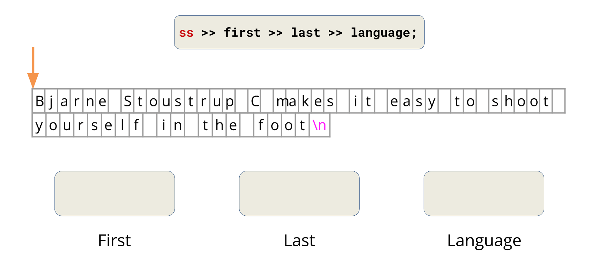

Lecture 4: Streams¶
约 678 个字 86 行代码 6 张图片 预计阅读时间 3 分钟
Streams¶
A simple definition: a general input/output (IO) abstraction for C++. Abstractions provide a consistent interface, and in the case of streams the interface is for reading and writing data.
iostream¶
std::coutstream is an instance ofstd::ostreamwhich represents the standard output stream.std::cinstream is an instance ofstd::istreamwhich represents the standard input stream.std::cerris used to output errors (unbuffered).std::clogis used for non-critical event logging (buffered).

Streams allow for a universal way of dealing with external data. We can classify different types of streams as:
- Input streams (I): a way to read data from a source.
- Are inherited from
std::ostream - ex. reading in something from the console
std::cin - primary operator:
>>(the extraction operator)
- Are inherited from
- Output streams (O): a way to write data to a destination.
- Are inherited from
std::ostream - ex. writing out something to the console
std::cout - primary operator:
<<(the insertion operator)
- Are inherited from
std::stringstream¶
std::stringstream is a way to treat strings as streams, useful for use-cases that deal with mixing data types.
int main() {
// partial Bjarne quote
std::string initial_quote = "Bjarne Stroustrup C makes it easy to shoot yourself in the foot";
// create a stringstream
std::stringstream ss(initial_quote); // initialize `stringstream` with string constructor
// ss << initial_quote; // also we can insert the `initial_quote` using `<<`
// data destinations
std::string first;
std::string last;
std::string language, extracted_quote;
ss >> first >> last >> language >> extracted_quote;
std::cout << first << " " << last << "said this: " << language << " " << extracted_quote << std::endl;
}
As for ss >> first >> last >> language >> extracted_quote in example above, it works like:

The >> operator will reads until the next whitespace, so the first >> will extract Bjarne into first.
{kind=link}

The >> operator will reads until the next whitespace, so the first >> will extract Bjarne into first.

In a similar way, the second >> will extract Stroustrup into last.

C into language.

Here we encounter the conflict: we want to extract the rest of initial_quote, but >> can only extract makes rather than makes it easy to ...
To tackle the problem, we can use getline(), which is defined as:
getline()reads an input streamisup until thedelimchar and stores it in some bufferstr.- The delim char is by default
\n. getline()will consume the delim character instr.
So we can extract the rest of initial_quote by std::getline(). The following implement would work as expected.
ss >> first >> last >> language;
std::getline(ss, extracted_quote);
std::cout << first << " " << last << "said this: " << language << " " << extracted_quote << std::endl;
Output streams¶
As we have defined before, output streams are a way to write data to a destination / external source. To gain a deeper understanding, here's a simple example.
The character in output streams are stored in an intermediary buffer before being flushed to the destination. std::cout stream is line-buffered, content in buffer will not be shown on external source until an explict flush occurs.
After this, originally stored in buffer tao is flushed into its destination. Another method is to use std::endl, it tells the cout stream to end the line, furthermore, it also tells the stream to flush.
In the example above, focus on the intermediate buffer and output: initially the buffer is empty, and then after the first loop, the buffer will contain two elements 1 and \n. Meanwhile, std::endl tells the stream to flush, so the buffer is cleared and output 1. In whole process there occurs 5 flushes.
However, flushing is an expensive operation, we should try to avoid frequent flushing. C++ is smart to know when to auto flush the buffer. One method is to use \n rather than std::endl.
In this case, the buffer will be filled in with i and \n until it's full, then C++ will auto flush the buffer. If the buffer can contain 8 elements, executing this code will only flush twice.
\n is more efficient, it is usually a good idea to use \n instead of std::endl.
Now let us focus on output file streams. Output file streams have a type std::ofstream, it is a way to write data to a file.
- use the
<<insertion operator to send to the file - there are some methods for
std::ofstream:is_open(),open(),close(),fail, ect. For more, you can refer to cppreference.
int main() {
std::ofstream ofs("hello.txt");
if (ofs.is_open()) {
ofs << "Hello CS106L!" << '\n';
}
ofs.close();
ofs << "this will not get written";
ofs.open("hello.txt");
// ofs.open("hello.txt", std::ios::app); `std::ios::app` is a flag specifies that you want to append, not truncate
ofs << "this will though! It's open again";
return 0;
}
Input streams¶
Input streams have the type std::istream, it is a way to read data from an destination / external source. Remember std::cin is the console input stream. Now let us focus on std::cin.
std::cinis buffered.- Think of it as a place where a user can store some data and then read from it.
std::cinbuffer stops at a whitespace, which in C++ includes:- " " (a literal space)
- \n
- \t
In this case, the buffer is initially empty. The first std::cin will do nothing to buffer, because cin buffer is empty so prompts for input. The second std::cin >> pi reads up to white space and saves input to double pi in buffer.
void cinGetlineBugFixed() {
double pi;
double tao;
std::string name;
std::cin >> pi;
std::getline(std::cin, name);
std::getline(std::cin, name);
std::cin >> tao;
std::cout << "my name is : " << name << " tao is : " << tao << " pi is : " << pi << '\n';
}
This case maybe looks kind of strange. Supoose our input is 3.14\nFabio Ibanez\n6.28\n, std::cin >> pi reads up to 3.14, the first getline() reads \n, and the next getline() reads Fabio Ibanez\n, std::cin >> tao reads 6.28. This shows the difference in how they parse data. std::cin() leaves the newline in the buffer, getline() gets rid of the newline.
So you should avoid using getline() and std::cin() together.
Also we have input file streams. Input and output streams on the same source / destination type are complimentary.
int inputFileStreamExample() {
std::ifstream ifs(“append.txt”);
if (ifs.is_open()) {
std::string line;
std::getline(ifs, line);
std::cout << “Read from the file: “ << line << ‘\n’;
}
if (ifs.is_open()) {
std::string lineTwo;
std::getline(ifs, lineTwo);
std::cout << “Read from the file: “ << lineTwo << ‘\n’;
}
return 0;
}